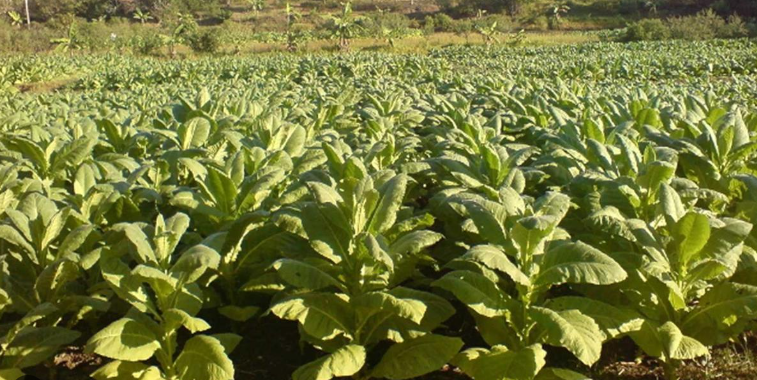

Tobaco
Bespoke. Smoke with class. Be a C-Suit
History of tobacco
Tobacco is derived from the leaves of the genus Nicotiana, a plant from the night-shade family, indigenous to North and South America. Archeological studies suggest the use of tobacco in around first century BC, when Maya people of Central America used tobacco leaves for smoking, in sacred and religious ceremonies. It then later started spreading as far as high up to the Mississippi Valley with the Maya community migrating from down south of America, between 470 and 630 AD. Gradually, it was then adopted by neighboring and native tribes. Native American “Shamans” developed tobacco use for religious rites. Simultaneously, people practicing medicine also started using tobacco in different forms to cure certain illnesses such as asthma, earaches, bowel problems, fever, sore eyes, depression, insect bites, burns, etc.[1] By the time Columbus and his successors documented tobacco in other countries, the natives started useing tobacco in pipes, cigars, and snuff. Subsequently, Portuguese and Spanish sailors helped to spread different forms of tobacco to be used, around the world. Today, tobacco is used in various forms in different parts of the world. Tobacco in many countries is sometimes adopted as a cash crop by the farmers and government treasuries (excise, taxes, etc.), and is also grown for local consumption. The major tobacco-growing and consuming countries are China, USA, the Former Soviet States, India, and Brazil. In South and Southeast Asia, it is incorporated into existing traditional customs, in the form of betel quid (paan) chewing. The tobacco industry provides thousands of jobs, and is also a major source of income for the advertising industries, printed and electronic media, government (for revnew and as a source of foreign currency).